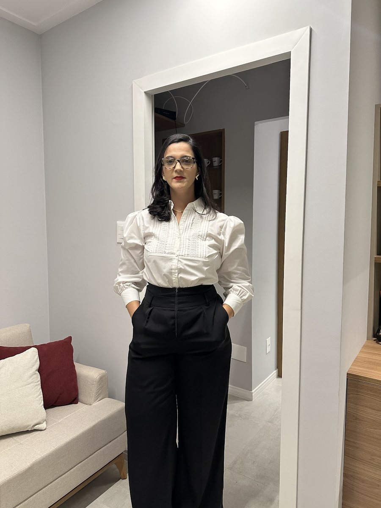
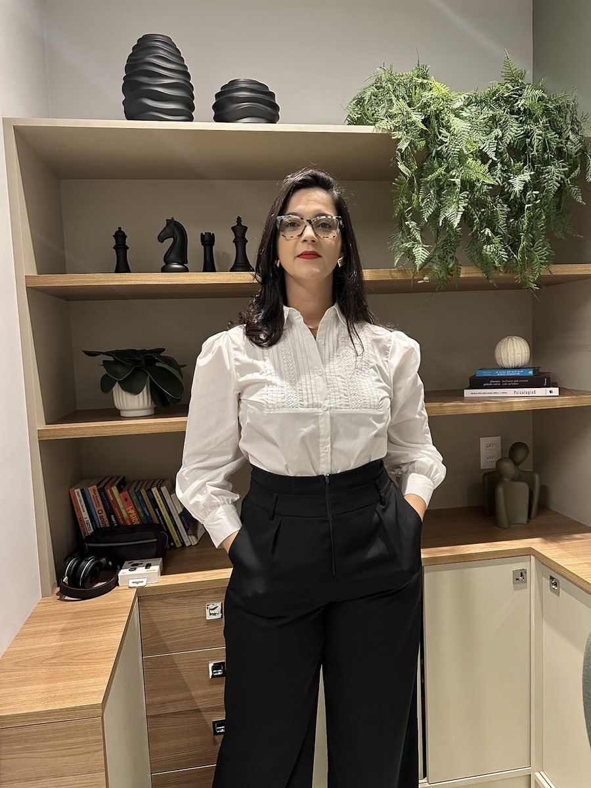

Início · O escritório
O escritório: Caminho das Árvores.
No Edifício Boulevard Side Empresarial, na Rua Ewerton Visco. Atendimento presencial ou on-line, sempre com hora marcada.
Onde fica
Endereço
- Tallyne Menezes Advocacia
- Edifício Boulevard Side Empresarial — Rua Ewerton Visco, 290, sala 1901.
- Caminho das Árvores, Salvador – BA, CEP 41820-022.
- WhatsApp: (71) 99100-7874.
Por dentro
O ambiente



A estante com livros, plantas e as peças de xadrez, e a sala clara com a almofada vinho. Fotos publicadas por ela na ficha do escritório no Google.
Atendimento
Horário
Atendimento com hora marcada
Horário informado na ficha do escritório no Google. O atendimento é com hora marcada — confirme dia e horário pelo WhatsApp antes de ir.
Acesso
Como chegar
- Bairro: Caminho das Árvores, na Rua Ewerton Visco.
- Estacionamento: a ficha do escritório no Google indica estacionamento no local.
- Na portaria: informe a sala 1901 e o nome da Dra. Tallyne.
- On-line: a reunião também pode ser combinada por vídeo — confirme pelo WhatsApp.
Rota
Mapa
Dúvidas frequentes
Perguntas comuns
Atende aos sábados?
A ficha do escritório no Google informa atendimento de segunda a sábado, das 8h às 18h. Confirme o horário pelo WhatsApp antes de ir.
Preciso marcar hora?
Sim. O atendimento é com hora marcada, combinada pelo WhatsApp.
Há estacionamento?
A ficha do escritório no Google indica estacionamento no local.
Fale com o escritório
Uma conversa de alinhamento, com hora marcada.
Edifício Boulevard Side Empresarial, sala 1901, Caminho das Árvores, Salvador. Mensagens pelo WhatsApp (71) 99100-7874.